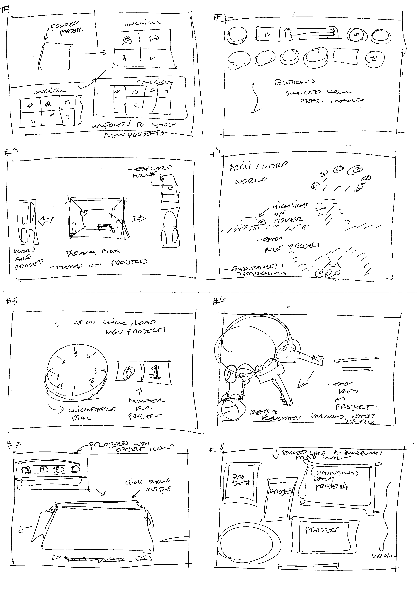

back
For part of week 3, we did some experimentation with paper protoyping. During this experiment, I was interested in creating a set of keys style interface, where users could scroll and reveal more keys or keychain. In this process, I found
Ultimately, I didn't end up using this idea for the main structure of my website. This idea was mostly spurred off something I had seen someone else do before. As one of the earlier parts of this subject, I feel that this concept came from a my knowledge of interactive technology, rather than my own ideas of what I could create. Maybe I will try experiment with this idea later.

addtionally, as the predecessor of my paper protoype, I did the crazy 8s exercise to draw out basic ideas. This activity was fun - but I started to run dry of ideas after iteration 5. From this activity, I particurally liked concepts #2, #4, #6 & #8 (hence the paper protoype from idea #6).
Looking back at this activity, it made me realise that I was really interested in trying out a range of different executions in my website - I didn't want to pick one. It helped me realise - why not use multiple ideas?
